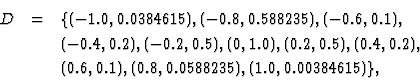
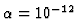
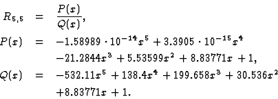
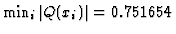
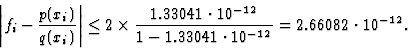
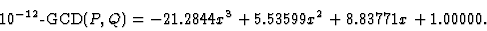
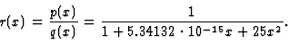
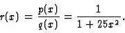

We show how the error of HRFA satisfies the error estimate
(11).
As a practical example, a data set


.
The data set D
is obtained by discretization of a function
f(x)=1/(1+25x2).
Because of the presence of a roundoff error,
rational interpolation of D is obtained by linearized equations such as


, we put c=1.33041. Thus, the accuracy of symbolic-numeric hybrid rational interpolation is


